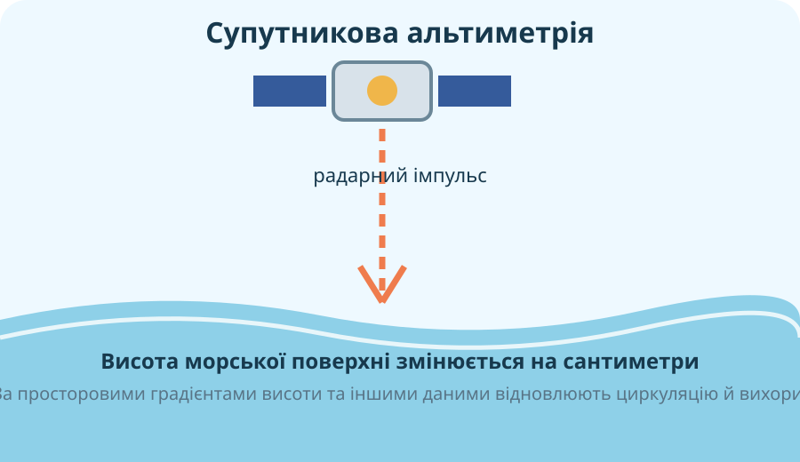
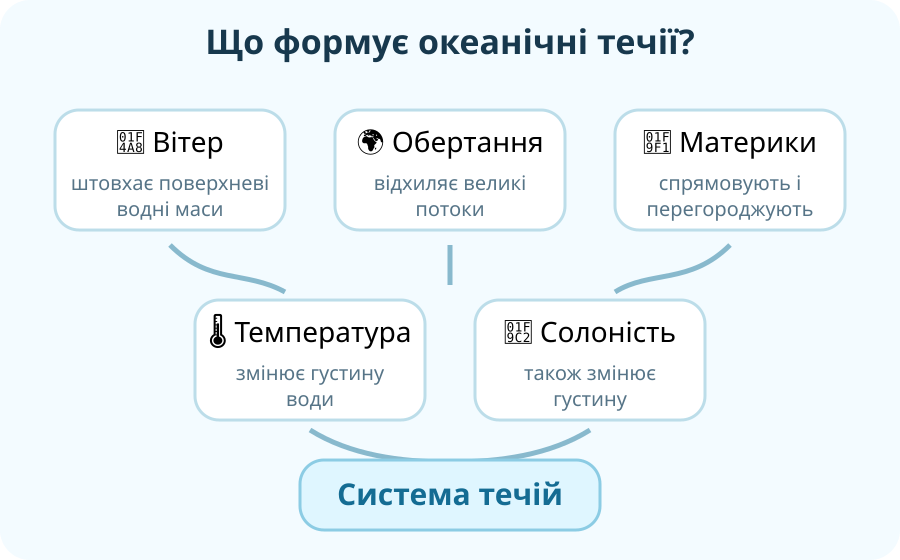

Хвилі
Коливальні рухи водної поверхні. Найчастіше їх створює вітер; енергія поширюється значно далі, ніж окремі частинки води.
Практична картографічна лабораторія: розрізняємо хвилі, припливи й течії, а потім самі наносимо на карту Гольфстрім і течію Західних вітрів.

Атлас або фізична карта світу, інтерактивна карта нижче, локальна схема течій, матеріали NOAA/NASA.
Критерій: не просто «провести стрілку приблизно», а показати правильний океанічний басейн, напрям і зв’язок течії з перенесенням тепла.
Ситуація: супутникові та буйкові дані показують стійке перенесення теплої води вздовж східного узбережжя Північної Америки на північний схід.
Оберіть течію. Поставте три точки послідовно вздовж її ходу: початкова ділянка → середня → кінцева. Сторінка порівняє Вашу траєкторію з еталонною областю й дасть просторовий зворотний зв’язок.
Супутникова карта температури поверхні показує теплу смугу й численні вихори.
NASA Earth Observatory →
Супутникові альтиметри вимірюють дуже малі відмінності висоти морської поверхні, пов’язані з циркуляцією.
NASA/JPL + Copernicus Marine →Учень стверджує: «Гольфстрім — просто смуга теплої води; якщо на супутниковому знімку є тепліша область, це автоматично течія».

Це навчальна модель: у реальному океані течії формуються системою взаємодій, а не одним повзунком.
NASA Goddard «Perpetual Ocean». Під час перегляду знайдіть: 1) де течії найвужчі й найшвидші; 2) де видно великі океанічні круговороти; 3) чому реальна течія не схожа на одну ідеально пряму стрілку.
Коливальні рухи водної поверхні. Найчастіше їх створює вітер; енергія поширюється значно далі, ніж окремі частинки води.
Періодичні підняття й опускання рівня океану через гравітаційну взаємодію Землі, Місяця й Сонця.
Спрямоване переміщення водних мас. Поверхневі течії значною мірою пов’язані з постійними вітрами, обертанням Землі та конфігурацією материків.
Потужна тепла течія Північної Атлантики, що переносить тепло від тропіків уздовж східного узбережжя Північної Америки на північний схід.
Антарктична циркумполярна течія рухається навколо Антарктиди із заходу на схід і сполучає води Атлантичного, Індійського й Тихого океанів.
Назва описує температуру води течії відносно навколишніх вод і напрям перенесення тепла, а не абсолютну «гарячість» чи «крижану» воду.
Тест відкриється лише після введення всіх даних.
NOAA — What is a current? • NOAA — Surface Ocean Currents • NASA — ECCO ocean currents • NASA SVS — Perpetual Ocean 2